Paul Rodriguez es uno de los skaters más populares e influyentes de la historia del skate, se le puede considerar un pionero en muchos aspectos y sin duda es un gran ejemplo de buen skater con una mente emprendedora.
Los inicios de Paul Rodriguez en el skate
P-Rod empezó con el skate a los 12 años de edad, en navidades le regalaron su primer skate. Él estaba fascinado viendo como chicos de su colegio eran capaces de levantar el skate del suelo y hacer que diera vueltas, desde su primer contacto con el skateboard, Paul no pudo separarse nunca más de él.
Los primeros sponsors de P-Rod
El primer sponsor de Paul Rodriguez fue una tienda de skate local llamada «One Eighteen«. Su dueño Andy Netkin y tenía 19 años en ese momento, mientras que P-Rod tenía solamente 14.
Paul Rodriguez era muy tímido, así que le pidió a un amigo que le pasara su vídeo «sponsor me» a Netkin, que se quedó tan impresionado y reclamó la presencia de Paul en la tienda cuanto antes. Netkin le ofreció un puesto dentro del team de la tienda. Andy Netkin ha manifestado en más de una ocasión la fuerte sensación que tuvo con Paul de que se convertiría en una leyenda del patín.
DNA Skateboards fue la primera marca en patrocinar a Paul Rodriguez, que apareció en el video Microanalysis lanzado el año 1999. Como curiosidad, en 2014 Anthony Pappalardo declaró en un programa de radio de Alex Olsen que él animó a Joe Castrucci (cofundador de Habitat skateboards), a que fichara a Paul Rodriguez antes de que lo fichara alguien oficialmente, pero Castrucci lo rechazó.
Paul como profesional del skate
A día de hoy P-Rod tiene su propio skatepark privado en Canoga Park area en California. Los elementos que forman parte del parque hacen referencia a sus sponsors, Mountain Dew, Nike SB y Target. Paul diseño el skatepark junto con el diseñador de skateparks Mike Roebke.
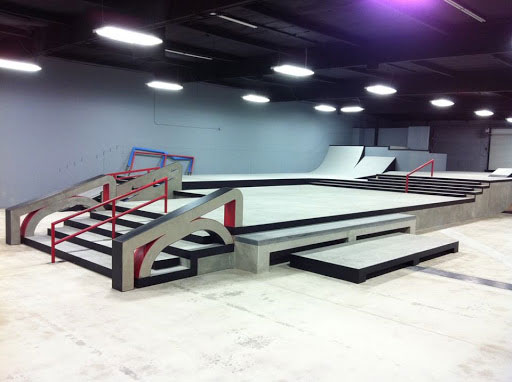
Es sin duda uno de los skaters mejor pagados de todos los tiempos y de los que más lejos ha llegado de la mano de sus sponsors. Todo eso no es fruto de la casualidad, ha ganado multitud de premios y competiciones muy importantes a lo largo de su carrera, además de ser considerado un gran skater y persona encima de la tabla y sin ella.
En 2011 Transworld Skateboarding puso a Paul Rodriguez en la posición número 30 dentro de los «30 skaters más influyentes de todos los tiempos«. Aunque Paul ya ha revelado más de una vez que para él los skaters más influyentes de todos los tiempos son Eric Koston, Andrew Reynolds y Tom Penny.
En colaboración con la empresa audiovisual «Network A», Rodriguez lanza una serie online de seis partes sobre él mismo titulada LIFE. La serie, producida y dirigida por el skater profesional y cofundador de Berrics Steve Berra, fue lanzado semanalmente en el canal de Youtube de la misma empresa.
Los sponsors de Paul Rodriguez
Paul Rodriguez en City Stars
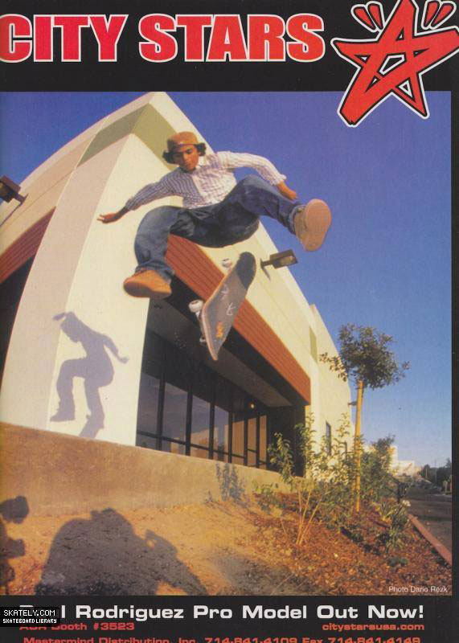
Con 16 años, la marca de skate fundada por el skater Kareem Campbell en Los Angeles le ofreció un patrocinio como amateur. Rodriguez tuvo la última parte en el vídeo Street Cinema, privilegio que normalmente se otorga a los por skaters más respetados de un team.
La primera media parte del vídeo tenía la canción «I Want You Back» de los Jackson 5, algo a lo que Paul se oponía ya que fue usada por Guy Mariano en su vídeo parte para Blind Skateboards en Video Days. Paul Rodriguez compartía team con otros amateurs como Mikey Taylor, Justin Case, Devine Calloway o Kevin «Spanky» Long, mientras que en el pro team tenían a skaters como Lee Smith, Joey Suriel, Ryan Denman y Eric Pupecki.
En esa época se despertó en Paul el interés por la joyería, ya que Campbell era un gran coleccionista y le regaló un brazalete a Paul. La influencia musical también fue muy importante para Paul en esa época, escuchando artistas como Jay-Z y Nas.
City Stars tenía planificado lanzar un signature skate para Paul, con su nombre en la parrilla de un Merceds Benz (el primer coche de P-Rod), pero la salida de Paul del equipo hizo que no fuera posible. P-Rod declaró que tenía claro que se iría del team y que avisó antes de que fabricaran todas las tablas con su nombre, también ha descrito esos tiempos como los más mágicos de su carrera donde todo se hacia a base de un contagioso entusiasmo y pasión.
Paul Rodriguez en Girl Skateboards
En 2002 Paul Rodriguz apareció en el video «In Bloom» de Transworld Skateboarding. Ese vídeo enseñaba un grupo de jóvenes skaters con mucha proyección en sus respectivas carreras.
Seguidamente al lanzamiento de este vídeo, Paul empezó a patinar para Girl Skateboards y en Septiembre de 2002 la marca le hizo pro skater. En una entrevista declaró que Eric Koston (uno de sus skaters favoritos) personalmente le había pedido unirse al team de Girl, fue sin duda uno de los momentos más emocionantes de su carrera y en el que culminó un sueño de la infancia.
Entre los 17 y los 19 años Paul estuvo en el equipo de Girl Skateboards, apareciendo en el vídeo «Yeah Right«, en el que tuvo el placer de compartir vídeo con skaters como Keenan Milton, Brandon Biebel, Brian Anderson, Marc Johnson, Mike York, Chocolate Montage, Justin Eldridge, Gino Iannucci, Owen Wilson, Robbie McKinley, Jereme Rogers, Mike Carroll, Rick McCrank o Eric Koston entre otros . Además en esa época estuvo compartiendo casa con el skater y rapero Jerem Rogers.
P-Rod también ha declarado que su primer pro model lanzado por Girl en 2002 es su gráfico favorito y siempre lo será. Una tabla con el logo de Girl, el nombre «Rodriguez» y la palabra «Muchachita» sustituyendo «Girl«, para él fue muy importante que viniera de la mano de Girl Skateboards. Incluso llegó a declarar públicamente que antes de recibir la oferta de Danny Way para unirse a la relanzada marca de skate Plan B, Paul consideraba Girl un sponsor para toda la vida.
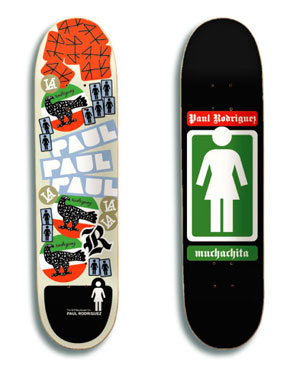
Paul Rodriguez en Plan B
Después de Girl, Paul se unió al relanzamiento de la marca de tablas de skate Plan B, que estaba bajo el liderazgo de sus skaters originales Danny Way y Colin McKay.
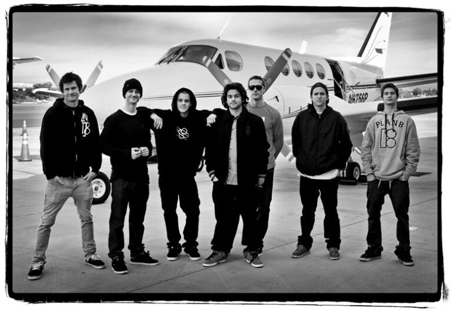
Rodriguez sacó su primera parte de vídeo el solo en 2010, se tituló «Me, Myself and I«. El vídeo generó bastante discusión y controversia dentro de la comunidad del skateboard, pero sin duda es un espectáculo de técnica y buen patín.
Durante una entrevista de radio en Julio de 2013 con Big Boi en Los Angeles, Paul Rodriguez confirmó su salida de Plan B, algo que ya estaba siendo especulado dentro de la comunidad. Durante su quinta parada de la Street League Skateboarding en Portland, Oregón. Paul patinó una tabla Plan B con el logo tapado, además el logo de Plan B fue eliminado de su página web personal el 16 de Julio del 2013, Rodriguez explicó en una entrevista «que estaba en busca de algo más de sí mismo».
Nike SB de la mano de P-Rod
Paul Rodriguez lanzó sus primeras zapatillas con Nike en 2005, después de dejar su sponsor con la marca de zapatillas de skate éS Footwear. En 2012, Rodriguez explicó lo siguiente en el apartado «Footnotes» de Berrics:
«La transición de éS a Nike fue dura, tuve que llamar Koston, a Tony de éS, a una serie de personas porqué era todo muy cercano, había una familia alrededor de éS. Después de liberarme de esa carga y estar dentro de Nike, sentía que el mundo se abría frente a mí«.
Nike apuesta por el skateboarding por segunda vez
Paul fue uno de los primeros riders por los que Nike apostó en su segundo intento por penetrar dentro del mercado y la cultura del skateboarding. La marca de zapatillas nunca había side demasiado bien aceptada dentro de la comunidad del skate pese a sus intentos de formar parte de ella. Empezando con Paul Rodriguez, la ayuda de probablemente uno de los presupuestos de marketing más elevados del mercado del skate y varios años de trabajo consiguieron penetrar en la mente de los skaters, incluso en algunos de los sectores más core.
Según Rodriguez sus primeros pensamientos cuando Nike le lanzó el anzuelo fueron buenos, es decir, hubo críticas y demás pero no me preocuparon demasiado. Él lo intentaba ver desde el punto de vista de que sus primeras zapatillas fueron unas Jordan, Nike había formado parte de su infancia. Y en los períodos que estuvo sin sponsor de zapatillas patinaba con unas Air Fore One o unas Cortez.
A mediados del año 2013 Nike ya estaba lanzando al mercado las zapatillas de skate «Nike SB Paul Rodriguez 7«. Fueron diseñadas por Shawn Carboy, con quién Rodriguez ya había trabajado para diseñar sus quintas signature model. Rodriguez priorizó la funcionalidad, el impacto y la protección.
Las «P-Rod 8» fueron lanzadas en Mayo de 2014. Paul promocionó las zapatillas junto a Lance Mountain en una entrevista en vídeo. Las «P-Rod 8» tenían incorporadas tres de las tecnologías desarrolladas por Nike: «Lunarlon«, «Flywire» y «Hyperscreen«.
Todos los modelos de Nike SB Paul Rodriguez
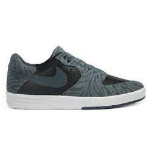
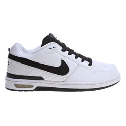
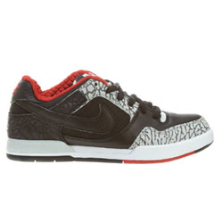
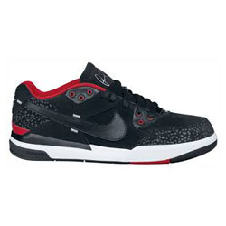
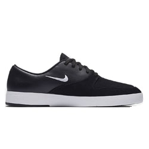
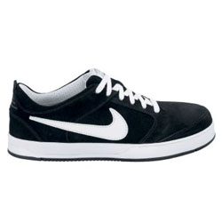
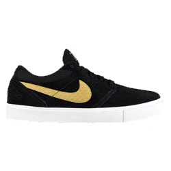
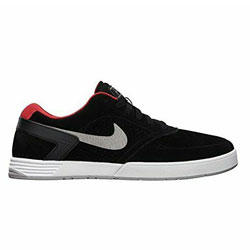
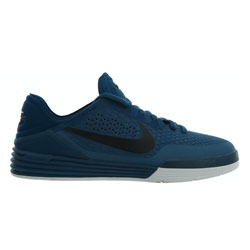
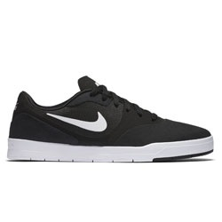
Después de lanzar este modelo, Rodriguez recibió la noticia por parte de Nike de ser uno de los únicos cuatro atletas de Nike en haber producido ocho signature models, los otros tres son Michael Jordan, Kobe Bryant y LeBron James.
Coincidiendo con el lanzamiento de sus octavas zapatillas con Nike, Paul Rodriguez explicó sus planes de futuro:
«Estoy en un punto en el que quería mi nombre en una tabla y lo hice, quería mi nombre en unas zapatillas y lo hice, quería otro tipo de apoyos, premios y ganar competiciones concretas, lo hice también… Ahora es el momento de retroceder esperando mejorar, espero seguir mejorando mis habilidades»
Primitive Skate
El nacimiento de Primitive
Primitive es una tienda de skate y ropa de Encino (California) fundada en 2008 por Paul Rodriguez, Heath Brinkley, Andy Netkin, Jay Partow y Jubal Jones. En ese momento Paul Rodriguez estaba patrocinado por Plan B Skateboards.
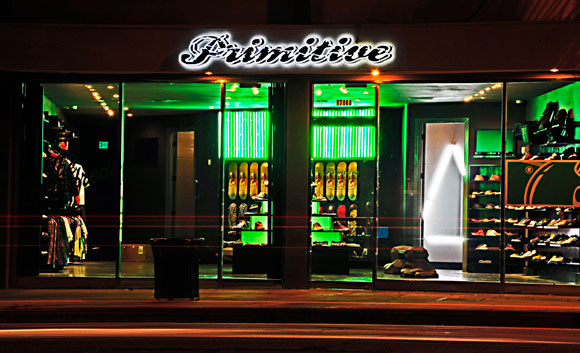
Una vez fuera del team de Plan B, Paul Rodriguez realizó una edición limitada de 500 unidades de las primeras tablas Primitive, unas tablas de skate realizadas con foil dorado brillante. Dieron la vuelta al mundo entero en gran parte por estar lanzadas por P-Rod y en otra parte por su imagen diferenciada y ese recurso con ese foil dorado que no se había visto en el skateboard hasta el momento.
En ese momento Paul decide fundar Primitive Skate como una marca de skate con la ayuda de Andy y Jubal.
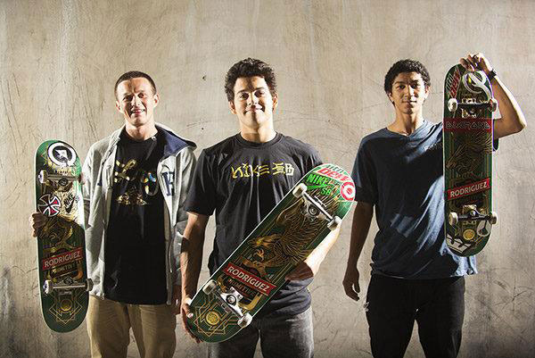
El 10 de Abril de 2014, diez meses después de haber abandonado Plan B, Paul Rodriguez anuncia públicamente el lanzamiento de Primitive Skate, presentándose a sí mismo como pro de la marca y a Carlos Ribeiro y Nick Tucker como amateurs.
Paul Rodriguez en las competiciones
Durante una entrevista en Julio de 2013 Paul Rodriguez comentó que su pasión por el skateboard fue tal desde el principio, que de niño llegó a dormir con su skate, también lo ha hecho con su primer trofeo de la Street League (SLS).
P-Rod ha ganado ocho medallas de los X-Games, de las cuales cuatro son medallas de oro.
Vídeos en los que aparece Paul Rodriguez
Micro analysis, DNA Skateboards (1999)
Logic – Issue 06, Logic video magazine (2000)
Project of a Lifetime, Monkey business (2001)
Logic – issue 09, Logic video magazine (2001)
Street Cinema, City Stars Skateboards (2001)
In Bloom, Transworld Skateboarding (2001)
411VM – Issue 50, 411VM video magazine (2002)
éS – Germany Tour 2002, éS shoe co (2002)
411VM – Vancouver 2002, 411VM video magazine (2002)
411VM – Issue 58, 411VM video magazine (2002)
Yeah Right, Girl Skateboards (2002)
Thrasher – King Of The Road 2003, Thrasher Magazine (2003)
411VM – Issue 63, (2004)
16 Below Volume 1, First Born, Independent Video (2004)
Nike SB – On Tap, Nike SB (2004)
Fourstar – Catalog Shoot, Fourstar (2005)
FKD Video, FKD (2005)
Girl – Oi! Meets Girl!, Girl Skateboards (2005)
Forecast, Independent Trucks (2005)
Transworld – A Time To Shine, Transworld Skateboarding (2006)
Plan B – Live After Death, Plan B (2006)
Nothing But The Truth, Nike SB (2007)
Money For Blook, Thrasher (2007)
Streets: LA, productions vídeo (2007)
Superfuture, Plan B Skateboards (2008)
Silver in Barcelona, Silver tour video (2008)
Plan B in Dominican Republic, Plan B (2008)
Proof, Independent Trucks (2009)
Gift/Nike SB China – It’s a Wrap, Girl/Nike SB Tour video (2009)